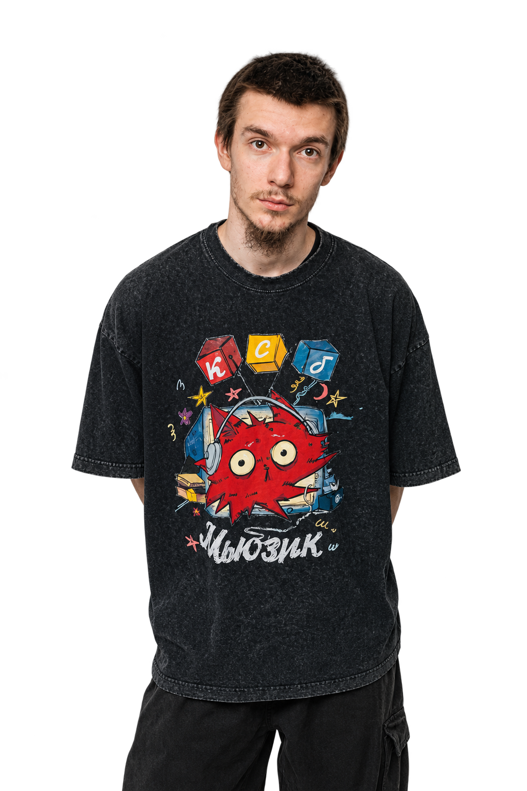

Полное имя — Гоэль Рафаэль Залманович Иоффе.
Родился в Волгограде в семье раввина Залмана Иоффе, главы еврейской общины Волгоградской области. Гоэль — один из шести детей в семье.
В 2015 году Гоэль отпраздновал бар-мицву в Волгограде — значит, год рождения ориентировочно 2002-й. На торжестве он сыграл на саксофоне хит Луи Армстронга «Let My People Go» — это, судя по всему, его первое публичное музыкальное выступление. Учился в московской религиозной школе для мальчиков.
В сентябре 2026 года Гоэль сыграл хупу (еврейскую свадьбу) в московской синагоге на Большой Бронной.
В марте 2025 года зарегистрировал ИП в Волгограде — вид деятельности: «деятельность в области художественного творчества» и «деятельность в области исполнительских искусств».
Путь в музыке: вместе с Артёмом Большаковым начал писать песни и выкладывать их во «ВКонтакте» — это был «общажный панк», дерзкий и без прикрас. Прорыв случился, когда треки про Dota 2 завирусились в TikTok. Сейчас на Яндекс Музыке у группы более 1,3 млн слушателей в месяц. Гоэль также ведёт TikTok-блог.